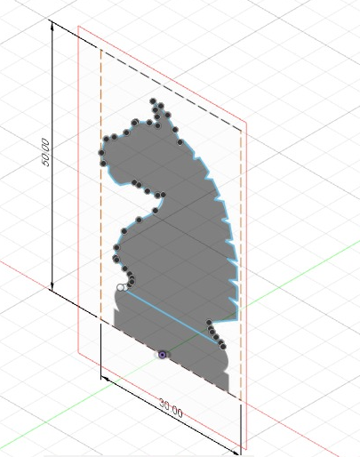
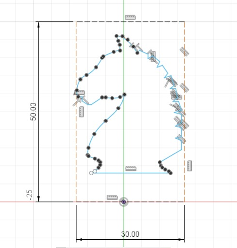
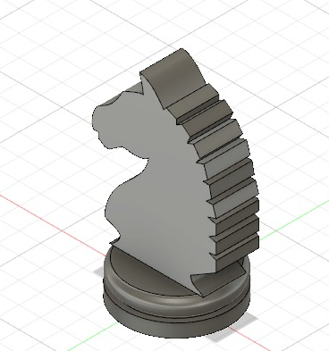
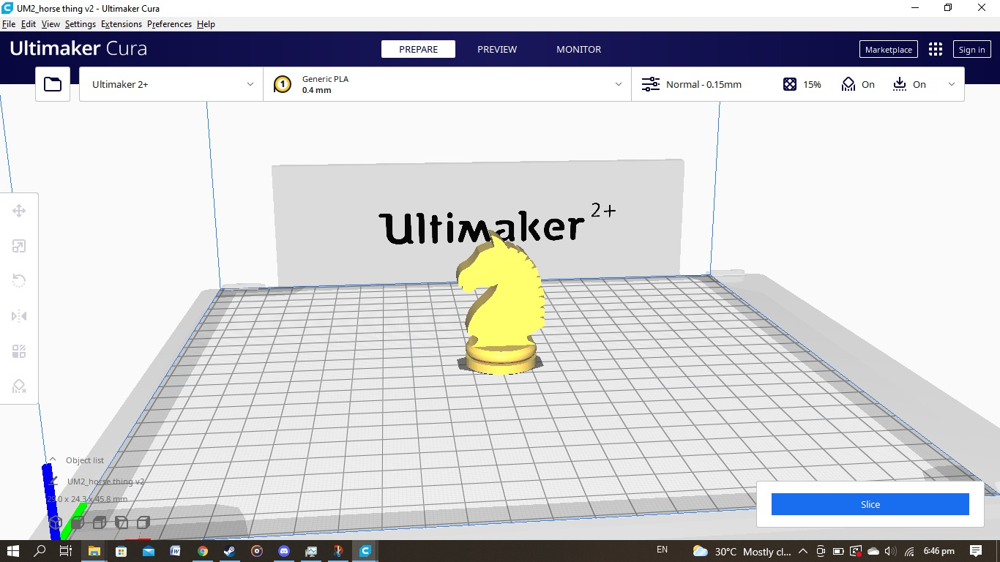
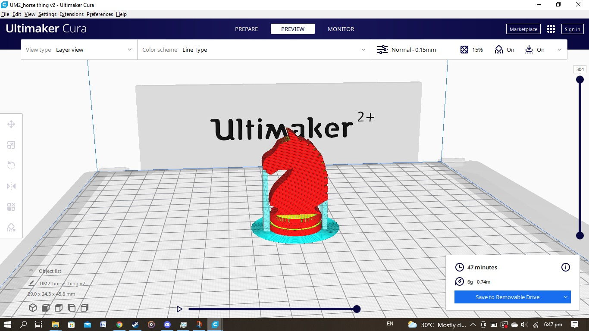
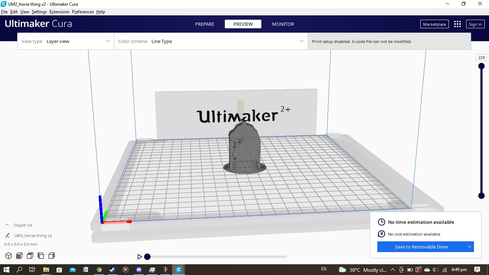
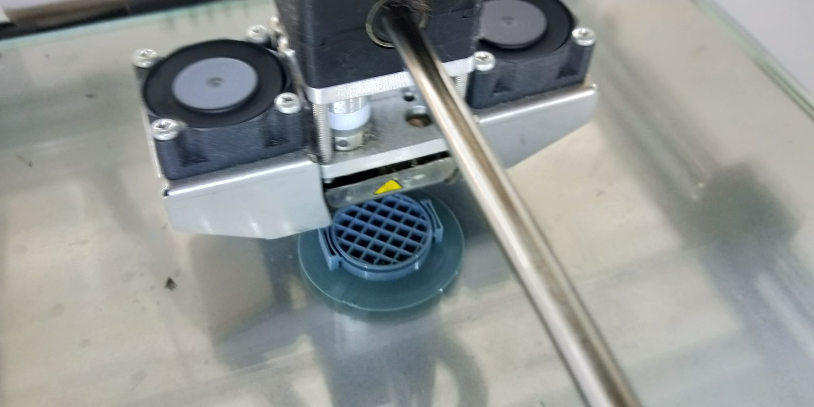
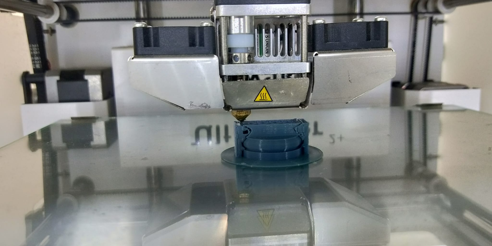
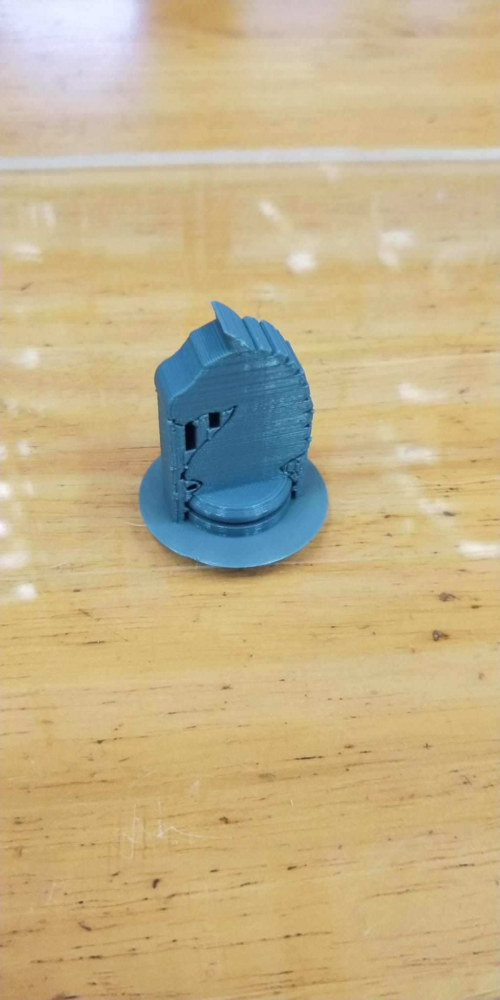
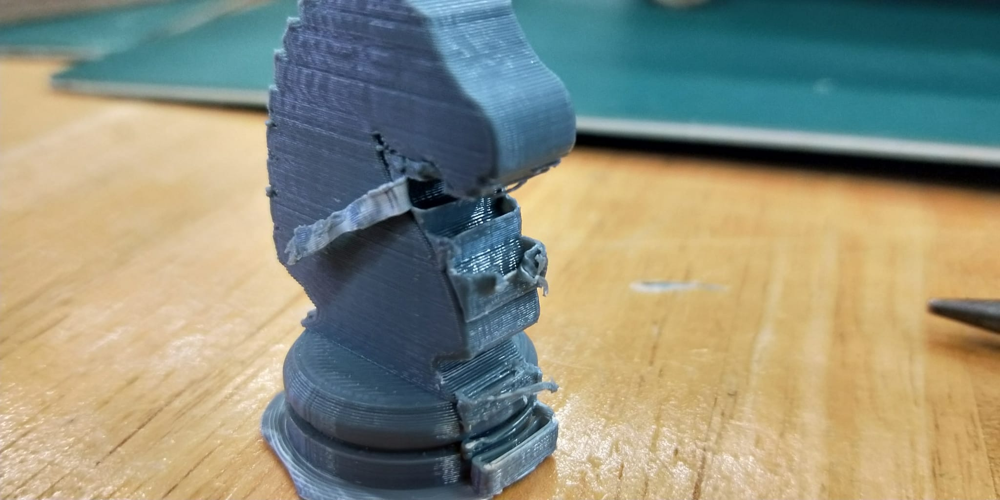

As part of our first fabrication project, we were tasked with modelling and printing a knight piece using an image from the internet.
First, I took a random side profile image of a knight and put it on a canvas. I then drew a 50x30mm bounding box to have a reference for how big the piece should be.
I then manually traced the outline of the picture to the best of my abilities.
I extruded the finished sketch by 10mm and revolved the bottom part of the sketch.
I exported the model as a .obj file and opened it in Ultimaker Cura.
I set the printing settings to the ones mentioned in class and sliced the model
Preview of the print, showing all the supports needed to print it.
Printing the piece, with a brim that helps with adhesion.
another shot, now showing more of the supports.
The finished print, which has a lot of supports, especially in hard-to-reach areas.
My attempt at removing the supports with pliers and a penknife, which wasn't very effective.
I may have to find a way to require less supports, like reducing the number of >=90 degree overhangs.